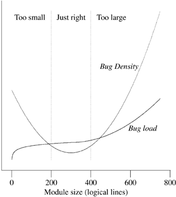

| [ Team LiB ] |
|
4.1 Encapsulation and Optimal Module SizeThe first and most important quality of modular code is encapsulation. Well-encapsulated modules don't expose their internals to each other. They don't call into the middle of each others' implementations, and they don't promiscuously share global data. They communicate using application programming interfaces (APIs)—narrow, well-defined sets of procedure calls and data structures. This is what the Rule of Modularity is about. The APIs between modules have a dual role. On the implementation level, they function as choke points between the modules, preventing the internals of each from leaking into its neighbors. On the design level, it is the APIs (not the bits of implementation between them) that really define your architecture. One good test for whether an API is well designed is this one: if you try to write a description of it in purely human language (with no source-code extracts allowed), does it make sense? It is a very good idea to get into the habit of writing informal descriptions of your APIs before you code them. Indeed, some of the most able developers start by defining their interfaces, writing brief comments to describe them, and then writing the code—since the process of writing the comment clarifies what the code must do. Such descriptions help you organize your thoughts, they make useful module comments, and eventually you might want to turn them into a roadmap document for future readers of the code. As you push module decomposition harder, the pieces get smaller and the definition of the APIs gets more important. Global complexity, and consequent vulnerability to bugs, decreases. It has been received wisdom in computer science since the 1970s (exemplified in papers such as [Parnas]) that you ought to design your software systems as hierarchies of nested modules, with the grain size of the modules at each level held to a minimum. It is possible, however, to push this kind of decomposition too hard and make your modules too small. There is evidence [Hatton97] that when one plots defect density versus module size, the curve is U-shaped and concave upwards (see Figure 4.1). Very small and very large modules are associated with more bugs than those of intermediate size. A different way of viewing the same data is to plot lines of code per module versus total bugs. The curve looks roughly logarithmic up to a 'sweet spot' where it flattens (corresponding to the minimum in the defect density curve), after which it goes up as the square of the number of the lines of code (which is what one might intuitively expect for the whole curve, following Brooks's Law[1]).
Figure 4.1. Qualitative plot of defect count and density vs. module size. This unexpectedly increasing incidence of bugs at small module sizes holds across a wide variety of systems implemented in different languages. Hatton has proposed a model relating this nonlinearity to the chunk size of human short-term memory.[2] Another way to interpret the nonlinearity is that at small module grain sizes, the increasing complexity of the interfaces becomes the dominating term; it's difficult to read the code because you have to understand everything before you can understand anything. In Chapter 7 we'll examine more advanced forms of program partitioning; there, too, the complexity of interface protocols comes to dominate the total complexity of the system as the component processes get smaller.
In nonmathematical terms, Hatton's empirical results imply a sweet spot between 200 and 400 logical lines of code that minimizes probable defect density, all other factors (such as programmer skill) being equal. This size is independent of the language being used—an observation which strongly reinforces the advice given elsewhere in this book to program with the most powerful languages and tools you can. Beware of taking these numbers too literally however. Methods for counting lines of code vary considerably according to what the analyst considers a logical line, and other biases (such as whether comments are stripped). Hatton himself suggests as a rule of thumb a 2x conversion between logical and physical lines, suggesting an optimal range of 400–800 physical lines. |
| [ Team LiB ] |
|